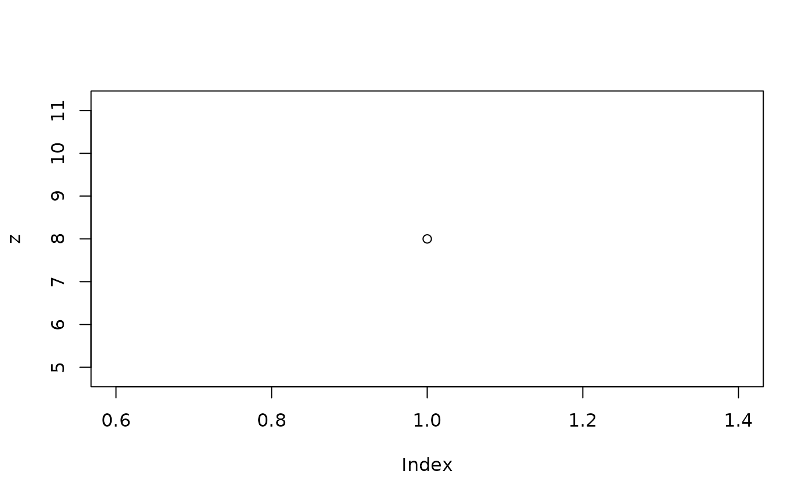

Introduction to qenv
A qenv inherits from the environment class,
behaves like an environment, and has the following characteristics:
- It inherits from the environment and methods such as
$,get,ls,as.list()work out of the box. -
qenvis a locked environment, and data modification is only possible through theeval_codeandwithinfunctions. - It stores printed and plotted outputs (see
get_outputs). - It stores metadata about the code used to create the data (see
get_code). - It supports slicing by
[. - It is immutable which means that each code evaluation does not
modify the original
qenvenvironment directly.
Initialization
The qenv() function serves as the gateway to create an
initial qenv object:
## <environment: 0x55f6b204dca0> üîí
## Parent: <environment: package:teal.code>
qenv basic usage
To modify the data use eval_code to execute R code
within the environment, yielding a new qenv object as the
output.
## <environment: 0x55f6af0e7ff0> üîí
## Parent: <environment: package:teal.code>
## Bindings:
## - x: [numeric]
q1 <- eval_code(my_qenv, "y <- x * 2")
q1 <- eval_code(q1, "z <- y * 2")
# my_qenv still contains only x
print(my_qenv)## <environment: 0x55f6af0e7ff0> üîí
## Parent: <environment: package:teal.code>
## Bindings:
## - x: [numeric]
names(my_qenv)## [1] "x"
# q1 contains x, y and z
print(q1)## <environment: 0x55f6afef2f68> üîí
## Parent: <environment: package:teal.code>
## Bindings:
## - x: [numeric]
## - y: [numeric]
## - z: [numeric]
names(q1)## [1] "x" "y" "z"The same result can be achieved with the within
method.
## <environment: 0x55f6af3d19a0> üîí
## Parent: <environment: package:teal.code>
## Bindings:
## - x: [numeric]
## - y: [numeric]
## - z: [numeric]To extract specific object from a qenv’s environment,
use [[. To extract an output of a print or
plot functions, use get_outputs() to get a
list() of outputs captured by qenv. These
functions are particularly useful for displaying them in a
shiny app. You can retrieve the code used to generate the
qenv using the get_code() function.
print(q2[["y"]])## [1] 4
print(get_outputs(q2)[[1]])
## x <- 2
## y <- x * 2
## z <- y * 2
## plot(z)Substitutions
In some cases, one may want to substitute some elements of the code
before evaluation. Consider a case when a subset of iris is
defined by an input value.
q <- qenv()
q <- eval_code(q, quote(i <- subset(iris, Species == "setosa")))
q <- eval_code(q, substitute(
ii <- subset(iris, Species == species),
env = list(species = "versicolor")
))
input_value <- "virginica"
q <- eval_code(q, substitute(
iii <- subset(iris, Species == species),
env = list(species = input_value)
))
summary(q[["i"]]$Species)## setosa versicolor virginica
## 50 0 0
summary(q[["ii"]]$Species)## setosa versicolor virginica
## 0 50 0
summary(q[["iii"]]$Species)## setosa versicolor virginica
## 0 0 50A more convenient way to pass code with substitution is to use the
within method.
qq <- qenv()
qq <- within(qq, i <- subset(iris, Species == "setosa"))
qq <- within(qq, ii <- subset(iris, Species == species), species = "versicolor")
input_value <- "virginica"
qq <- within(qq, iii <- subset(iris, Species == species), species = input_value)
summary(qq[["i"]]$Species)## setosa versicolor virginica
## 50 0 0
summary(qq[["ii"]]$Species)## setosa versicolor virginica
## 0 50 0
summary(qq[["iii"]]$Species)## setosa versicolor virginica
## 0 0 50See ?qenv for more details.
Combining qenv objects
Given a pair of qenv objects, you may be able to “join”
them, creating a new qenv object encompassing the union of
both environments, along with the requisite code for reproduction:
common_q <- eval_code(qenv(), quote(x <- 1))
x_q <- eval_code(common_q, quote(y <- 5))
y_q <- eval_code(common_q, quote(z <- 5))
join_q <- c(x_q, y_q)
print(join_q)## <environment: 0x55f6aeca6338> üîí
## Parent: <environment: package:teal.code>
## Bindings:
## - x: [numeric]
## - y: [numeric]
## - z: [numeric]
names(join_q)## [1] "x" "y" "z"The feasibility of joining qenv objects hinges on the
contents of the environments and the code’s order. Refer to the function
documentation for further details.
Warnings and messages in qenv objects
In cases where warnings or messages arise while evaluating code
within a qenv environment, these are captured and stored
within the qenv object. Access these messages and warnings
using get_messages() and get_warnings()
functions as shown below.
q_message <- eval_code(qenv(), quote(message("this is a message")))
get_messages(q_message)## [1] "~~~ Messages ~~~\n\n> this is a message\nwhen running code:\nmessage(\"this is a message\")\n\n~~~ Trace ~~~\n\nmessage(\"this is a message\")"
q_warning <- eval_code(qenv(), quote(warning("and this is a warning")))
get_warnings(q_warning)## [1] "~~~ Warnings ~~~\n\n> and this is a warning\nwhen running code:\nwarning(\"and this is a warning\")\n\n~~~ Trace ~~~\n\nwarning(\"and this is a warning\")"If any of above returns NULLm then no warnings nor
messages were present.
Utilizing qenv inside shiny
applications
These functions can be seamlessly integrated into shiny
applications to produce reproducible outputs. In the example below, the
rcode section showcases the code employed for generating
the output.
When employing a qenv to evaluate code, should an error
occur, an object of type qenv.error is generated. This
object can be utilized wherever a qenv object is used,
alleviating the need for code alterations to handle these errors. Select
the error_option in the example below to witness
qenv error handling in action.
library(shiny)
# create an initial qenv with the data in
data_q <- qenv()
data_q <- eval_code(data_q, "iris_data <- iris")
ui <- fluidPage(
radioButtons(
"option", "Choose a column to plot:",
c("Sepal.Length", "Sepal.Width", "Petal.Length", "Petal.Width", "error_option")
),
verbatimTextOutput("rcode"),
plotOutput("plot")
)
server <- function(input, output, session) {
# create a qenv containing the reproducible output
output_q <- reactive({
req(input$option)
within(
data_q,
p <- hist(iris_data[, .(input$option)])
)
})
# display plot output
output$plot <- renderPlot(output_q()[["p"]])
# display code
output$rcode <- renderText(get_code(output_q()))
}
if (interactive()) {
shinyApp(ui, server)
}
qenv and teal applications
The versatile qenv object can seamlessly integrate into
teal modules. Explore the teal vignette Creating
Custom Modules for detailed guidance.